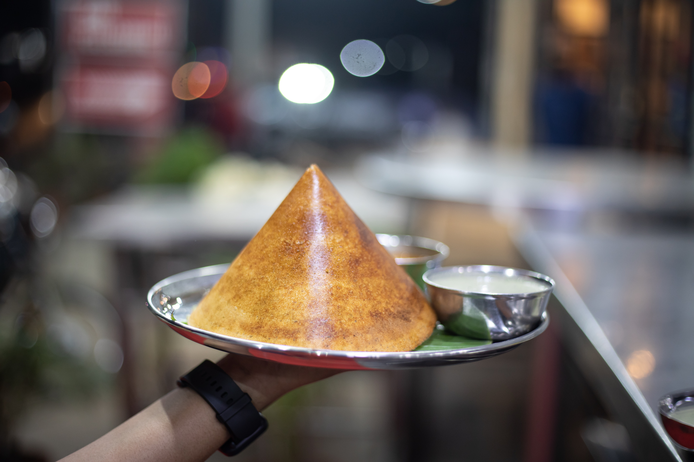

Description
A properly made crisp and savory Indian dosa is wonderfully delicious, and fairly simple to make at home, with this caveat: the batter must be fermented overnight for the correct texture and requisite sour flavor. However, once the batter is ready, it can be refrigerated and kept for several days, even a week. With a traditional spicy potato filling, dosas makes a perfect vegetarian breakfast or lunch. Serve them with your favorite chutney.
Ingredients
- 2 cups short-grain rice
- ½ cup urad dal (split husked black lentils)
- 1 teaspoon fenugreek seeds
- ½ teaspoon salt
- Vegetable oil, for frying
Instructions
- Make the dosa batter: Put rice in a bowl, rinse well and cover with 4 cups cold water. Put urad dal and fenugreek seeds in a small bowl, rinse well and add cold water to cover. Leave both to soak for 4 to 6 hours.
- Drain rice and dal-fenugreek mixture in separate colanders. Put rice in a food processor, blender or wet-dry grinder. Add 1 cup cold water and grind to a smooth paste. It will take about 10 minutes, and it may be necessary to work in batches. Repeat the process with the dal-fenugreek mixture.
- Combine the two pastes in a medium mixing bowl. Whisk together, adding enough water to obtain a medium-thick batter. You should have about 6 cups. Cover bowl with a kitchen towel and set in a warm place. Let ferment until the surface is bubbly, about 8 hours. Stir in the salt. Use the batter straight away or refrigerate for later use. (Batter will keep for up to a week, refrigerated. Thin with water if necessary before proceeding.)
- Make the potato filling: Put ghee in a wide skillet over medium heat. When oil is wavy, add mustard seeds and cumin seeds. Wait for seeds to pop, about 1 minute, then add red peppers and onion. Cook, stirring until onions have softened, about 5 minutes. Season lightly with salt. Add turmeric, asafetida, ginger, curry leaves, garlic and green chile. Stir to coat and let sizzle for 1 minute.
- Add potatoes and ½ cup water. Cook, stirring well to combine, until liquid has evaporated, about 5 minutes. Mash potatoes a bit with the back of a wooden spoon. Season well with salt, add cilantro, then set aside at room temperature. (Potato filling may be prepared up to a day in advance.)
- To make dosas, set a griddle or cast-iron skillet over medium heat. Brush with about 1 teaspoon vegetable oil. Ladle ¼ cup batter in the center of griddle. Using bottom of ladle, quickly spread batter outward in a circular motion to a diameter of about 7 inches. Drizzle ½ teaspoon oil over the top.